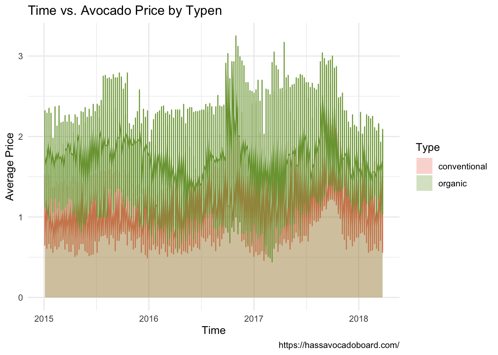

Organic vs. Conventional
Organic fruit has earned itself a place with people being more and more concerned about life quality. Compared with conventionally farm products, organically grown avocado has lower detectable levels of pesticide residue. Yet, the price is higher as well.

The conventional avocado still takes over the market with lower prices. 
Avocado Price in US over time
We found that across years, the fluctuation of avocado prices was getting greater. Still, a similar pattern could be observed that the prices always peaks around the third quarter of the year. 
Relationship between Prices and Total Volume
By visualizing both Price vs. Time and Volume vs. Time, we noticed that the volume peak is a signal for an upcoming drop in avocado prices.

Top Avocado Consumption in US
We are interested in the ranking of regions people from which consumed the most amount of avocados.